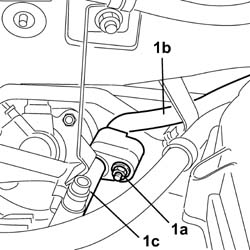
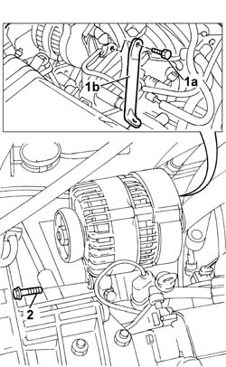
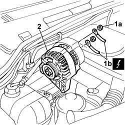

5530A15 ALTERNATOR - R.R. FOR VERSIONS WITH RIGHT HAND DRIVE AND AIR CONDITIONING
- Path
- Procedures > 55 ELECTRICAL EQUIPMENT > 5530 CURRENT GENERATOR > 5530A alternator and components > 5530A15 ALTERNATOR - R.R. FOR VERSIONS WITH RIGHT HAND DRIVE AND AIR CONDITIONING
- Kind
- repair procedure (removal / refitting; the operation number is the code)
- Applies to
- engines: 1.2 8v; all production periods
- Interactive page
- https://sloeber94.github.io/elrnDB-fDbl/en/#/2584922
Applies to: engines: 1.2 8v; all production periods; only with equipment: Right hand drive
 Removing
Removing
 Refitting
RefittingDisconnect the battery negative terminal.
Op. 0010T84 COOLANT FOR AIR CONDITIONING SYSTEM - DEHYDRATE AND RECHARGE
Op. 3330C30 BRAKE FLUID RESERVOIR - R + R AND WASH INSIDE
Op. 1092B68 BELT FROM A/C COMPRESSOR TO ALTERNATOR DRIVE - R + R
1. Undo the bolt (1a) fixing the coupling between the rigid section of the air conditioning system high pressure pipe (1b) and the flexible section (1c) and move the flexible section aside.

Applies to: engines: 1.2 8v; all production periods; only with equipment: Right hand drive
1. Using a suitable spanner at the rear of the air filter casing, undo the bolt (1a) fixing the alternator mounting bracket (1b).
2. Undo the bolts loosened previously to remove the blet.

Applies to: engines: 1.2 8v; all production periods; only with equipment: Right hand drive
1. Undo the fixing nuts (1a) and disconnect the alternator leads (1b).
 | Name | Connector |
|---|---|---|
1b | Alternator |
2. Remove the complete alternator.

Applies to: engines: 1.2 8v; all production periods; only with equipment: Right hand drive
Refitting
RemovingFit the alternator in its housing and connect the electrical wiring securing it using the fixing nuts.
| Name | Connector |
|---|---|---|
- | Alternator |
 | Fastening | Component | Ø | Value (daNm) |
|---|---|---|---|---|
- | Nut | ALTERNATOR ECU LEAD/S | M8 | (Cable B+) 2.4 |
Tighten the alternator fixing bolts and fit the drive belt on the alternator pulley.
Tighten the bolt fixing the alternator reinforcement bracket.
Connect the flexible section of the air conditioning system high pressure pipe to the rigid section and tighten the bolt fixing the coupling between them.
Op. 1092B68 BELT FROM A/C COMPRESSOR TO ALTERNATOR DRIVE - R + R
Op. 3330C30 BRAKE FLUID RESERVOIR - R + R AND WASH INSIDE
Op. 1092B70 BELT FROM AIR CONDITIONER COMPRESSOR TO ALTERNATOR DRIVE - ADJUST TENSION
Op. 0010T84 COOLANT FOR AIR CONDITIONING SYSTEM - DEHYDRATE AND RECHARGE
Connect the battery negative terminal.
Topics linked from this page (5)
- 0010T84 coolant for air conditioning system dehydrate and recharge
- 1092B68 belt from a/c compressor to alternator drive r + r
- 1092B70 belt from air conditioner compressor to alternator drive -adjust and tension
- 3330C30 brake fluid reservoir - r + r and wash inside
- A010 ALTERNATOR